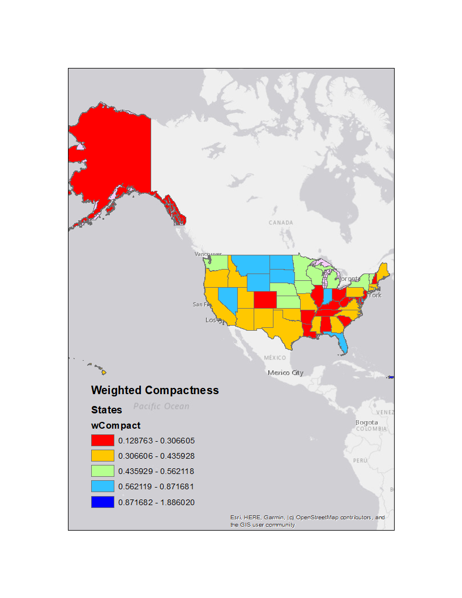

This is an example of an analysis done using the gerrymandering detector linked to on the git hub section.
The shpaefiles used do not match perfectly and are not completely accurate.
If you with to perform your own analysis using different shapefiles for the states and district boundaries,
please download the toolbox on the github page linked to on this site.

Average Compactness
This image was generated using the Gerrymandering detector script. It is the average compactness of the congerssional district in each state.
Weighted Compactness
This image was generated using the Gerrymandering detector script, but the symbology on the layer is based on the weighted compactness value given for the states.
Copyright Bradley Stephenson using Bootstrap; GIS Programming 2019